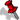

{kind=link}

|
Here are some websites and stuff that I think are really cool (not as cool as my website, though ;P) and really worth checking out, email me if I forgot something good! GamesI may be a 40-odd-year-old fox, but I love gaming! So here is a fun selection of free games that you can play now :0  LibreQuake: I loved Quake growing up in the 1990s, yeah, Doom was fun, but SuperTuxKart: Banger. Such a fun racing game that I love to play whenever I have friends around and also play online. Also what's really cool is that someone made a kart of me >:D Freedoom: I loved Doom growing up in the 1990s, yeah, Quake was fun, but Minetest: It's crazy to think that there are people making whole games 100% for free and are as good as the legit things. Minetest is a great example of this (also try MineClone2!). SuperTux: Amazing. I love this game so much The Simulator: I still remmeber when one of my school friends sent me this URL in 1998 (over IRC!!). It's a fun little game that's oddly funny at times. ToolsHere are a number of things that I use on the daily that I think you'd find very useful. Kiwix: So as I live in the middle of no where, a lot of the time my internet can be very slow. So bascally over a good few days, I left my computer on 24/7 while I downloaded a torrent of Wikipedia - and guess what? I can use Kiwix to view that website (as well as loads of other wikis) even without internet! So, so useful. Hitchhiking on Wikivoyage: A very, very useful guilde on how to,.. well, hitchhike across the place. DuckDuckGo: This might be one of the best search engines that I know of. I stopped using Google in 2016, so this was a good replacement. Castles of Wales: Info for castles in the UK... well, Wales... The red pin icon was taken from Wikimedia Commons. Copyright © Xenia . Some rights reserved. Please see humans.txt for full credits! Made for Onfim. |